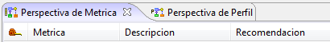
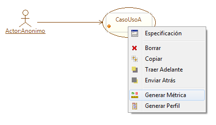
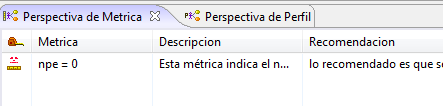
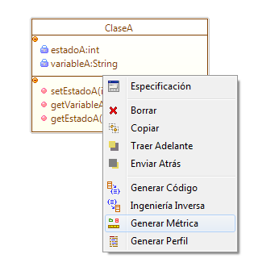
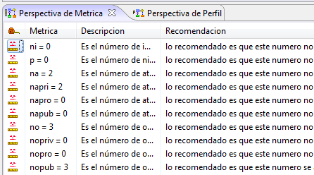
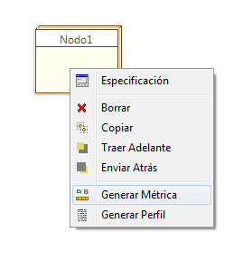
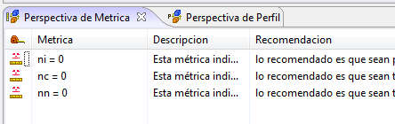
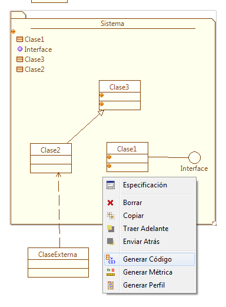
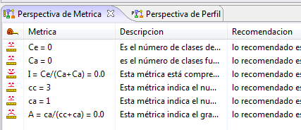

El componente de métricas permite realizar
cuantificar características sobre los diferentes artefactos como
clases, metodos, sistemas, casos de uso, entre otros. Las mediciones
sobre estos se realizan con el fin de obtener parámetros confiables de
comparación y de ofrecer guias para determinar la calidad de
una cierta parte de un software.
Las métricas se presentan en una pestaña del marco de extensión, esta
está compuesta de tres columnas como se muestra en la Figura 1.

Figura 1. Perspectiva de Métrica
- Métrica: Muestra el
valor de la medición para una métrica dada.
- Descipción: Da una
indicación general acerca del tipo de métrica que se está tratando
- Recomendación:
Muestra el significado de los diferentes valores de la métrica y el
valor esperado para cada una de las mediciones.
Coloso ofrece métricas para:
CASOS DE USO
Para generar las métricas para un caso de uso es necesarios hacer click
derecho sobre este y seleccionar Generar Métrica, como se observa en la figura 2.

Figura 2. Acceso a componente de métricas para casos de uso
Una vez realizado esto, la perspectiva de métricas en el marco de
extensión es actualizada con las mediciones realizadas sobre un caso de
uso como se muestra en la Figura 3.

Figura 3. Metrica para casos de uso
- npe : Indica el
número de puntos de extensión de un caso de uso. La recomendación es
que no sean pocos puntos.
CLASES
Para
generar las métricas de una clase es necesario hacer click derecho
sobre ésta y seleccionar Generar Métrica, como se muestra en la Figura 4.

Figura 4. Generar Métrica para Clases
Una vez realizado esto, la perpectiva de métricas en el marco de
extensión es actualizada con las mediciones realizadas sobre la clase, como se observa en la Figura 5.

Figura 5. Metricas para clases en la perspectiva de métrica
Las métricas aplicadas a las clases son:
- ni : Indica el número de
implementaciones de la clase. La recomendación es que este número no
sea muy grande, ojala no mayor a 5.
- p : Representa el número de niveles de herencia de la clase. La
recomendación es que este número no sea muy grande, ojala no mayor a 5.
- na : El número de
atributos dentro de la clase. La recomendación es que este número no
sea muy grande, ojala no mayor a 10.
- napri : Es el
número de atributos privados dentro de la clase. La recomedación es que
este número no sea muy grande, ojala no mayor a 10.
- napro : Esta métrica indiaca el
número de atributos protegidos dentro de la clase. La recomendación es
que este número no sea muy grande, ojala no mayor a 10.
- napub : Es el
número de atributos públicos de la clase,. La recomendación es que este
número sea cero por seguridad de la información.
- no : Es el número
de operaciones dentro de la clase. La recomendación es que este número
no sea muy grande.
- nopriv : Indica el
número de operaciones privadas dentro de la clase. La recomendación es
que este número sea acorde a los servicios internos necesarios.
- nopro : Es el
número de operaciones protegidas dentro de la clase. La recomendación
es que este número sea acrode a los servicios propuestos para heredar y
protegidos al cliente externo.
- nopub : Es el
número de operaciones públicas de la clase. La recomendación es que
este número sea acorde al número de servicios de exportación.
NODOS DE EMPLAZAMIENTO
Para
generar las métricas de un nodo de emplazamiento es necesario hacer
click derecho
sobre éste y seleccionar Generar Métrica, como se muestra en la figura 6.

Figura 6. Generar Métrica para nodos de emplazamiento
Una vez realizado esto, la perpectiva de métricas en el marco de
extensión es actualizada con las mediciones realizadas sobre la clase, como se muestra en la FIgura 7.

FIgura 7. Perspectiva de Métrica para Nodos de emplazamiento
Las métricas pertinentes a los nodos de emplazamiento son:
- ni : Indica el
número de interfaces en el nodo. Lo recomendado es que sean pocas.
- nc : Esta métrica
indica el número de componentes en el nodo de emplazameinto. Lo
recomendado es que esta número sea correspondiente al necesario.
- nn : Esta métrica
indica el número de nodos. La recomendación es que sean tantos como
sean necesarios.
SISTEMAS
Para
generar las métricas de un sistema es necesario hacer click derecho
sobre éste y seleccionar Generar Métricas como se muestra en la Figura 8. Hay que notar que las
métricas están referidas a los elementos dentro del sistema y sus
relaciones, por lo que los sistemas sin elementos o relaciones no
producen valóres para las métricas.

FIgura 8. Generar Métrica para un Sistema
Una vez realizado esto, la perpectiva de métricas en el marco de
extensión es actualizada con las mediciones realizadas sobre la clase, como se observa en la Figura 9.

Figura 9. Perspectiva de Métrica para un sistema
Las métricas aplicadas a los sistemas son:
- Ce : Es el número
de clases dentro del paquete que dependen de las clases externas al
sistema. Lo recomendado es que este número tienda a cero.
- Ca : Es el número
de clases fuera del paquete que dependen de las clases contenidas en el
sistema. Lo recomendable es que este número sea alto.
- I = Ce/(Ca+Ca):
Esta métrica está comprendida en el intervalo [0,1] , donde I = 0
indica qu el paquete es totalmente estable y por el contrario I= 1
indica un paquete totalmente inestable. Lo recomedable es que
este valor tienda a cero.
- cc : Esta métrica
indica el número de clases concretas. Lo recomendable es que este valor
sea cercano a cero al comienzo de la fase de diseño.
- ca : Esta
clase indica el número de clases abstractas. Lo recomendable es
que este valor sea alto al inicio de la fase de diseño.
- A = ca / (cc + ca) : Esta métrica indica el grado de abstracción. Lo recomendable es
que este valor tienda a uno.